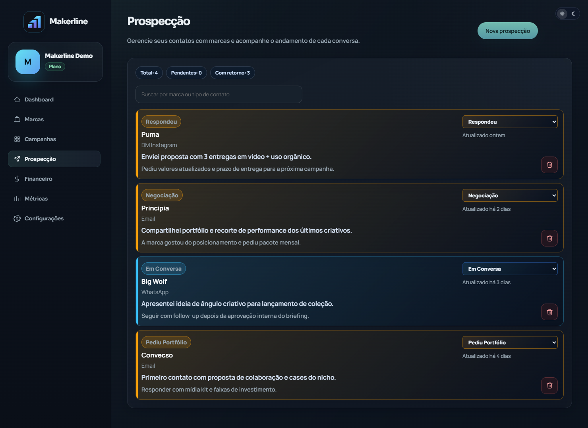
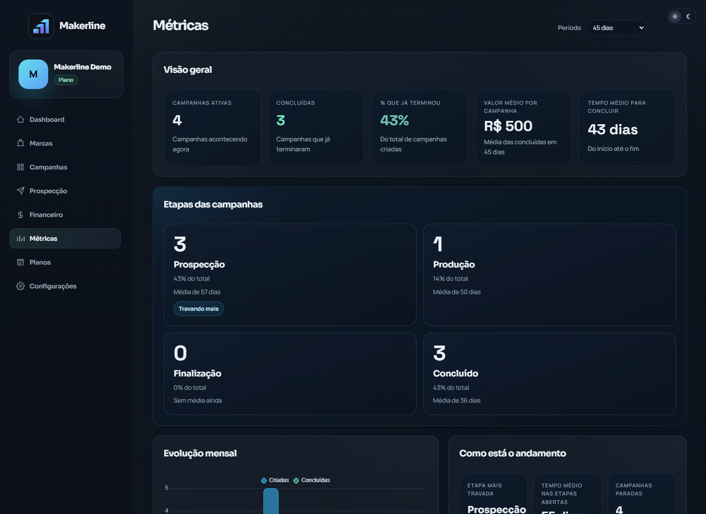

Campanha escapa quando tudo fica espalhado.
Briefing, proposta, envio, aprovação e pagamento em lugares diferentes. Alguma coisa sempre se perde.
O Makerline centraliza campanhas, prazos, propostas, prospecção, entregas e pagamentos para creators UGC que querem trabalhar como profissionais, sem depender de WhatsApp, planilhas soltas ou Notion bagunçado.

Você fecha campanhas, entrega conteúdo e conquista marcas. Mas no fim do dia ainda gasta energia tentando lembrar o que falta entregar, quem ainda vai pagar e qual campanha está atrasada.
Briefing, proposta, envio, aprovação e pagamento em lugares diferentes. Alguma coisa sempre se perde.
Pagamento atrasado, campanha sem status e marca que some viram ansiedade e dinheiro parado.
Quanto mais campanha entra, mais o improviso quebra sua operação.
Telas reais do Makerline, o mesmo painel que os creators já usam pra rodar as campanhas todo dia.
Cada campanha com status, prazo, valor e próximo passo numa visão clara.
Marcas, propostas e retornos organizados por estágio comercial.

Campanhas ativas, valor a receber, tempo médio e evolução do mês.

Muito intuitivo. Tive contato com outra plataforma e fiquei perdida. No Makerline fiquei zero perdida. As funções estão muito bem colocadas, e o que testei até agora é nota 10.
Muito melhor do que fazer planilha. Está tudo organizado, tem o dashboard e te mostra exatamente onde você está. Tem aplicativo melhor que esse?
Gostei bastante da funcionalidade e praticidade. Achei muito intuitivo e fácil de usar. Parabéns por criar um app que ajuda nós creators a organizar melhor nossos trabalhos, realmente é uma necessidade que temos.
Teste tudo por 15 dias sem cartão. Se gostar, escolha o ciclo que cabe na sua operação.
Pra sentir na prática antes de pagar qualquer coisa.
Sem cartão
O melhor custo pra quem já vive de campanha.
Equivale a R$ 29/mês
Flexível pra manter a operação organizada mês a mês.
Cancele quando quiser
Não. São 15 dias com tudo liberado, sem cartão. Você só decide o plano se quiser continuar depois do teste.
Sim, direto pelo painel. Sem ligação, sem burocracia. Você fica no controle da assinatura.
Serve. Se você já fecha, ou quer começar a fechar, campanha com marca, o Makerline organiza sua operação desde a primeira.
Sim. A ideia é centralizar toda a rotina comercial do creator num painel próprio: campanhas, marcas, prazos, valores e próximos passos.
Ficam. Tudo é salvo na sua conta e sincroniza automaticamente. Você acessa de onde estiver, sempre atualizado.
Cria a conta, importa sua primeira campanha e sente a diferença de enxergar tudo num lugar só.